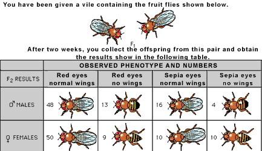

On the basis of the results shown in the table, which statement is most likely true?
a.
The genes for red eyes and normal wings are linked.
b.
The gene for no wings is sex-linked.
c.
The gene for red eyes and the gene for no wings are both dominant.
d.
The gene for eye color is inherited independently of the gene for wings.
e.
The F
1
mates were both homozygous for both eye color and wings.